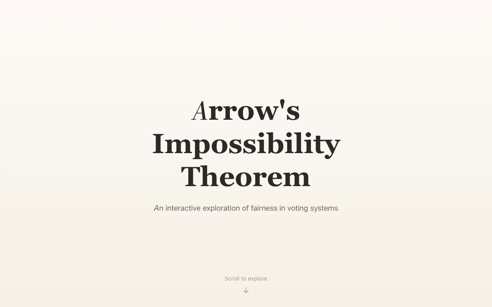

- Arrow's theorem (1951) says that with three or more candidates, no way of turning a set of individual rankings into one group ranking can satisfy four conditions at once.
- I wrote a scroll-through explainer in seven chapters with a sandbox at the end where you set three voters' rankings over three candidates, pick a method, and watch the checker find a counterexample.
- playseanre.id/voting
- sourcegithub.com/sean-reid/voting